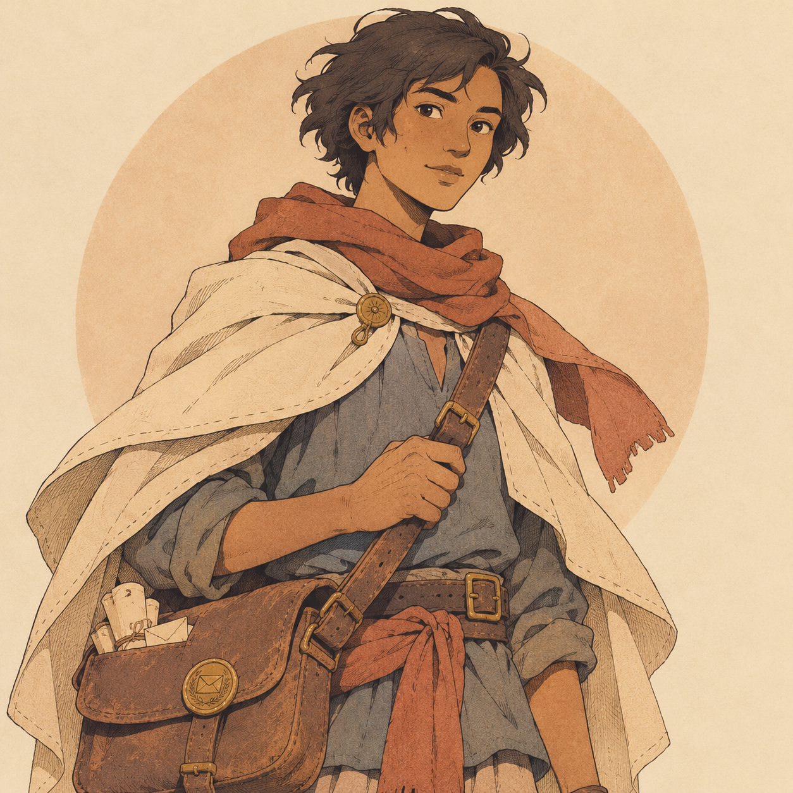
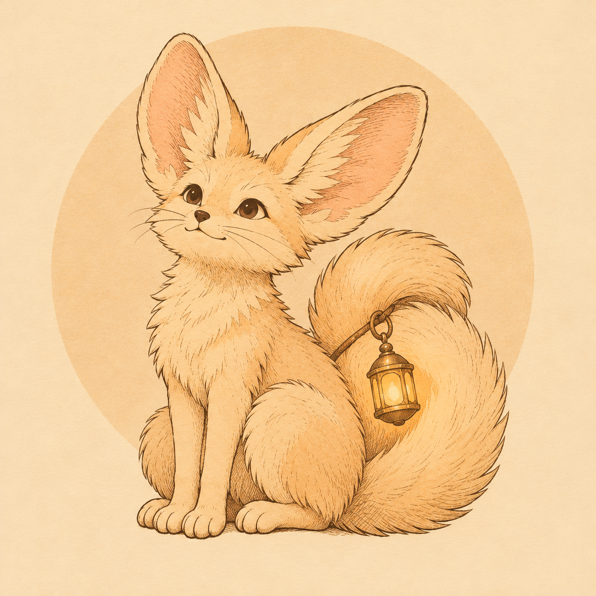

IKATAN PENGANTAR / BUKU 01
Buku Jalur
LEMBAH PASIR 1 : perjalanan
Potongan cerita
Tempat yang ditemukan
Nama Baik
Kepercayaan tumbuh dari surat yang sampai dan jalan yang kamu buka.
Catatan jalur Tanah Sada · Tahun 100 Telan. Lembah Pasir dapat dijelajahi dalam demo; empat wilayah lain menunggu perjalanan berikutnya.
Dua alat. Bukan untuk menaklukkan dunia,
tetapi untuk menemukan jalan melaluinya.

NARA & RURU
Tak ada yang berjalan sendirian.
Jubah Layar selalu dikenakan. Tahan Spasi saat turun untuk melayang. Ruru membaca medan di sekitarmu dengan Q.
